Chapter 7 Add significant marks
Sometimes you want to add some special marks in plot to highlight some genes or samples. I wrote geom_tracktile2 and geom_trackgenomictile2 which can add marks in each cell. The follwing examples we will show how to use them.
7.1 geom_tracktile2
7.1.1 single mark annotation
Imagine we have sig column to annotate for each row:
set.seed(111)
mat <- data.frame(scale(USArrests))
mat$sig <- sample(c("","*"),50,replace = T)
mat$gp <- sample(LETTERS[1:4],50,replace = T)
mat$x <- rownames(mat)
# check
head(mat,3)
# Murder Assault UrbanPop Rape sig gp x
# Alabama 1.24256408 0.7828393 -0.5209066 -0.003416473 * A Alabama
# Alaska 0.50786248 1.1068225 -1.2117642 2.484202941 B Alaska
# Arizona 0.07163341 1.4788032 0.9989801 1.042878388 * D Arizona
mat.long <- reshape2::melt(mat,id.vars = c("x","sig","gp"))
# check
head(mat.long,3)
# x sig gp variable value
# 1 Alabama * A Murder 1.24256408
# 2 Alaska B Murder 0.50786248
# 3 Arizona * D Murder 0.07163341Default heatmap:
ggcirclize(data = mat.long,mg.t = 2.5,mg.b = 2.5,
mapping = aes(x = x,y = variable,fill = value,
sector = gp,end = 360)) +
geom_tracktile2(add.yaxis = F,
strip.label.pos = "bottom",
scales = "free_x") +
scale_fill_gradient2(low = "green",mid = "white",high = "red",midpoint = 0)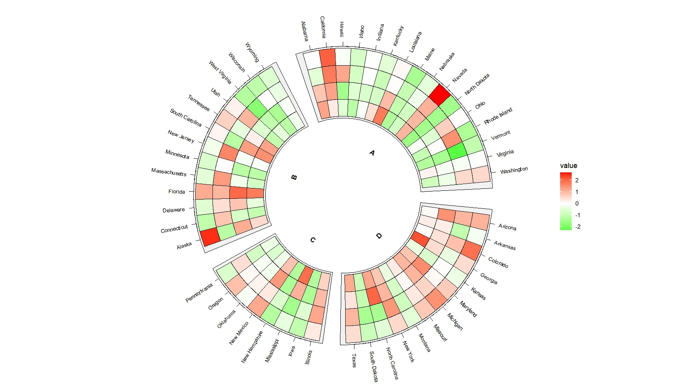
We should add mark variable in mappig:
ggcirclize(data = mat.long,mg.t = 2.5,mg.b = 2.5,
mapping = aes(x = x,y = variable,fill = value,
sector = gp,end = 360)) +
geom_tracktile2(aes(mark = sig),
add.yaxis = F,strip.label.pos = "bottom",scales = "free_x") +
scale_fill_gradient2(low = "green",mid = "white",high = "red",midpoint = 0)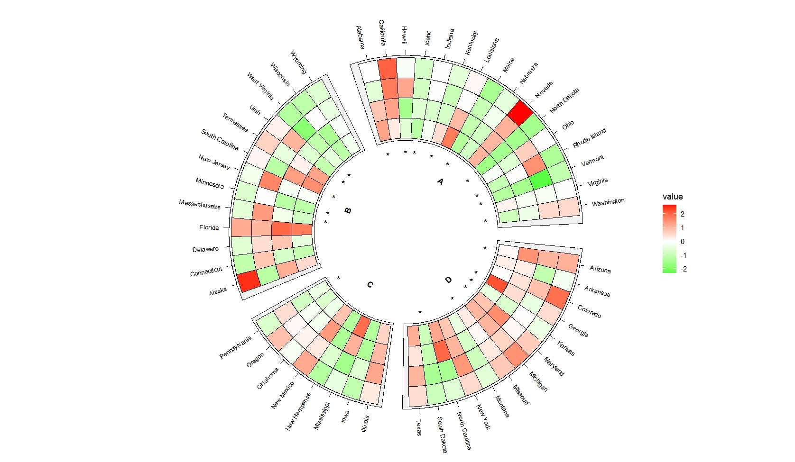
7.1.2 matrix mark annotation
If you have a matrix mark annotation for each cell, you should set mark.mat=TRUE and supply a long format mark annotation data.
Parepare data:
set.seed(111)
mat_sig <- data.frame(USArrests)
mat_sig$gp <- mat$gp
mat_sig$x <- rownames(mat_sig)
mat_sig[,1:4] <- sample(c("","*"),200,replace = T)
# check
head(mat_sig,3)
# Murder Assault UrbanPop Rape gp x
# Alabama * * A Alabama
# Alaska * * * B Alaska
# Arizona * * * D Arizona
mat_sig_long <- reshape2::melt(mat_sig,id.vars = c("x","gp"))
# check
head(mat_sig_long,3)
# x gp variable value
# 1 Alabama A Murder *
# 2 Alaska B Murder
# 3 Arizona D Murder *If you don’t set mark.mat=TRUE:
ggcirclize(data = mat_sig_long,mg.t = 2.5,mg.b = 2.5,
mapping = aes(x = x,y = variable,mark = value,
sector = gp,end = 360)) +
geom_tracktile2(add.yaxis = F,strip.label.pos = "bottom",
scales = "free_x")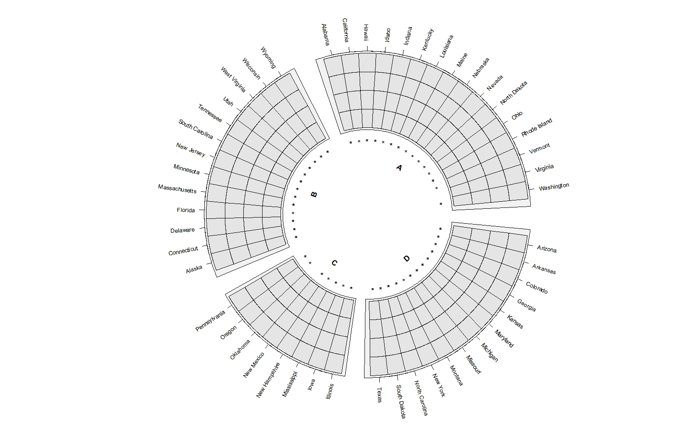
ggcirclize(data = mat_sig_long,mg.t = 2.5,mg.b = 2.5,
mapping = aes(x = x,y = variable,mark = value,
sector = gp,end = 360)) +
geom_tracktile2(add.yaxis = F,strip.label.pos = "bottom",
scales = "free_x",
mark.mat = T)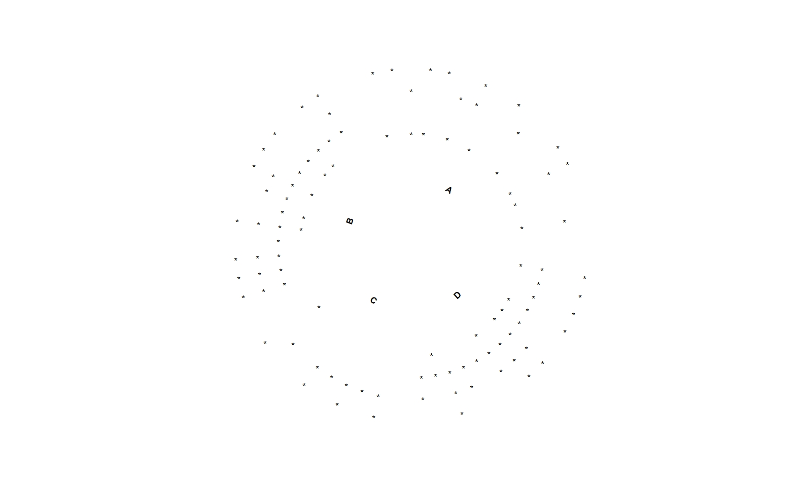
Combine heatmap and mark annotation layers:
ggcirclize(data = mat_sig_long,mg.t = 2.5,mg.b = 2.5,
mapping = aes(sector = gp,start = 90,end = 360)) +
geom_tracktile2(data = mat.long,
aes(x = x,y = variable,fill = value),
add.yaxis = c(T,F,F,F),
yAxis.params = list(axis.type = "y",pos = "right"),
strip.label.pos = "bottom",
scales = "free_x") +
geom_tracktile2(aes(x = x,y = variable,mark = value),
add.yaxis = F,strip.label.pos = "bottom",
scales = "free_x",
mark.mat = T) +
scale_fill_gradient2(low = "green",mid = "white",high = "red",midpoint = 0)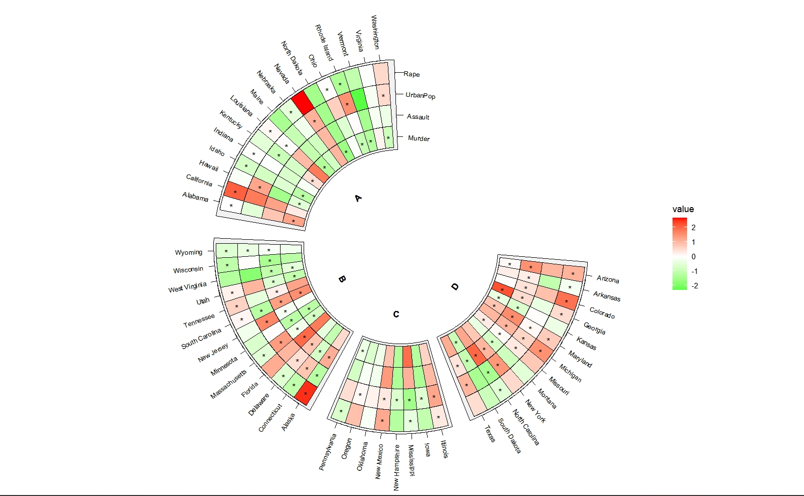
7.2 geom_trackgenomictile2
7.2.1 single mark annotation
Imagine we have sig column to annotate for each row:
set.seed(111)
bed = generateRandomBed(nr = 100, nc = 4)
bed$sig <- sample(c("","*"),107,replace = T)
# check
head(bed,3)
# chr start end value1 value2 value3 value4 sig
# 1 chr1 11430681 19926061 -0.5968045 -0.9207672 -1.13299798 -0.6809522
# 2 chr1 45779013 121260167 0.1820934 1.3590278 0.58149679 0.2405623 *
# 3 chr1 121534504 127361787 0.1808312 0.0956222 -0.05807752 0.3709858
bed_long <- bedMatTolong(bed,retain.var = "sig")
head(bed_long,3)
# chr start end x sig variable value y
# 1 chr1 11430681 19926061 1 value1 -0.5968045 1
# 2 chr1 45779013 121260167 2 * value1 0.1820934 1
# 3 chr1 121534504 127361787 3 value1 0.1808312 1Add marks:
ggcirclize(bed_long,aes(end = 360,r0 = 0.6,r1 = 0.9,
chr = chr,gstart = start,gend = end)) +
geom_trackgenomictile2(aes(x = x,y = y,fill = value,mark = sig),
add_link = T,
chrom_data = chrom_hg19,strip.label = T) +
scale_fill_gradient2(low = "green",mid = "white",high = "red",midpoint = 0)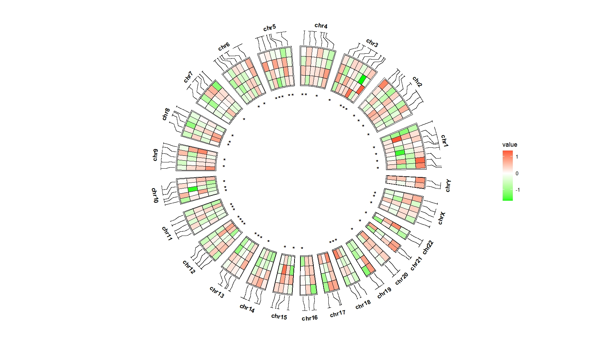
Adjust the mark annotation position:
ggcirclize(bed_long,aes(end = 360,r0 = 0.6,r1 = 0.9,
chr = chr,gstart = start,gend = end)) +
geom_trackgenomictile2(aes(x = x,y = y,fill = value,mark = sig),
add_link = T,
chrom_data = chrom_hg19,strip.label = T,
mark.shift = -0.05) +
scale_fill_gradient2(low = "green",mid = "white",high = "red",midpoint = 0)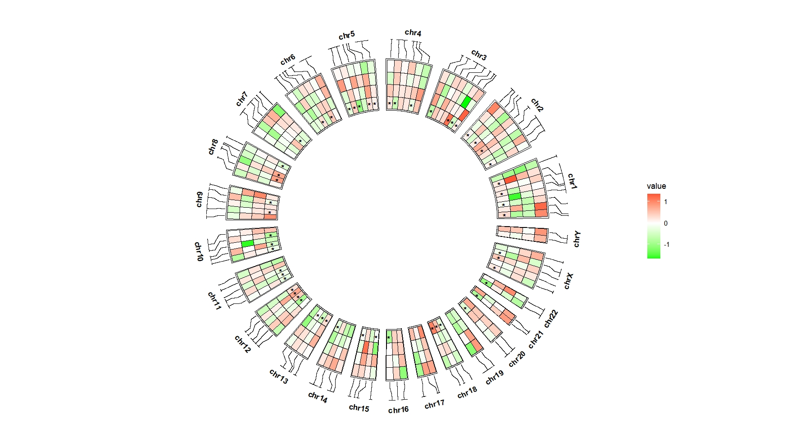
Put them on the top:
ggcirclize(bed_long,aes(end = 360,r0 = 0.6,r1 = 0.9,
chr = chr,gstart = start,gend = end)) +
geom_trackgenomictile2(aes(x = x,y = y,fill = value,mark = sig),
add_link = T,link_pos = "bottom",
chrom_data = chrom_hg19,strip.label = T,
mark.pos = "top") +
scale_fill_gradient2(low = "green",mid = "white",high = "red",midpoint = 0)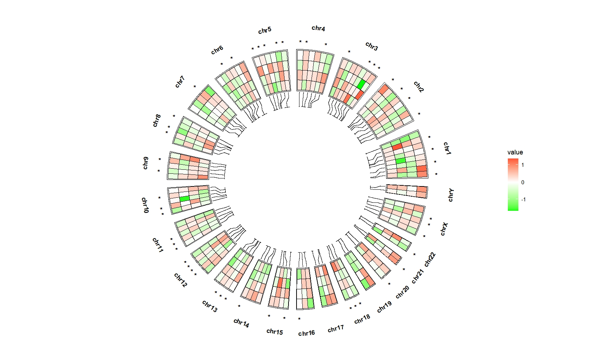
Assign other symbol:
bed_long <- bed_long %>%
mutate(sig = ifelse(sig == "*","@",sig))
ggcirclize(bed_long,aes(end = 360,r0 = 0.6,r1 = 0.9,
chr = chr,gstart = start,gend = end)) +
geom_trackgenomictile2(aes(x = x,y = y,fill = value,mark = sig),
add_link = T,link_pos = "bottom",
chrom_data = chrom_hg19,strip.label = T,
mark.pos = "top") +
scale_fill_gradient2(low = "green",mid = "white",high = "red",midpoint = 0)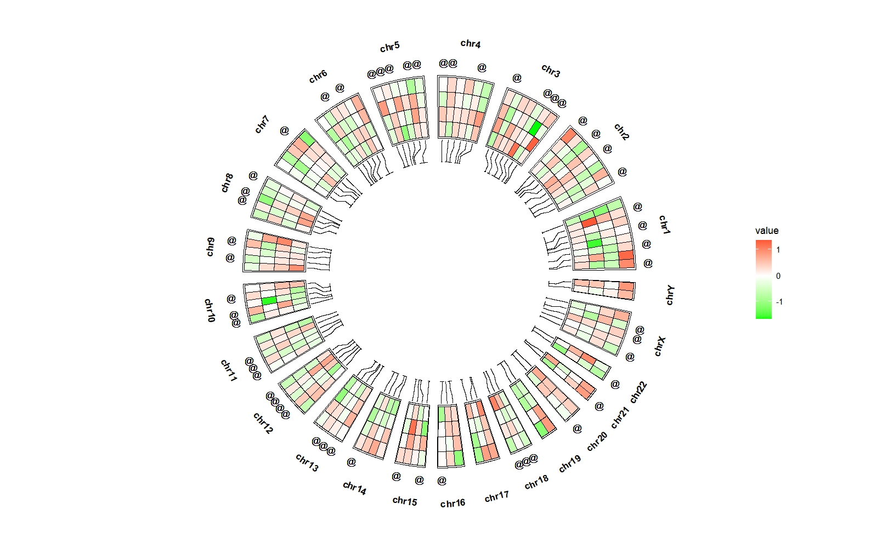
7.2.2 matrix mark annotation
set.seed(111)
bed_sig = generateRandomBed(nr = 100, nc = 4)
bed_sig[,4:7] <- sample(c("","*"),4*107,replace = T)
# check
head(bed_sig,3)
# chr start end value1 value2 value3 value4
# 1 chr1 11430681 19926061
# 2 chr1 45779013 121260167 * * * *
# 3 chr1 121534504 127361787 *
bed_long_sig <- bedMatTolong(bed_sig)
# check
head(bed_long_sig,3)
# chr start end x variable value y
# 1 chr1 11430681 19926061 1 value1 1
# 2 chr1 45779013 121260167 2 value1 * 1
# 3 chr1 121534504 127361787 3 value1 1Plot:
ggcirclize(bed_long_sig,aes(end = 360,r0 = 0.6,r1 = 0.9,
chr = chr,gstart = start,gend = end)) +
geom_trackgenomictile2(aes(x = x,y = y,mark = value),
add_link = T,chrom_data = chrom_hg19,
strip.label = T,
mark.mat = T)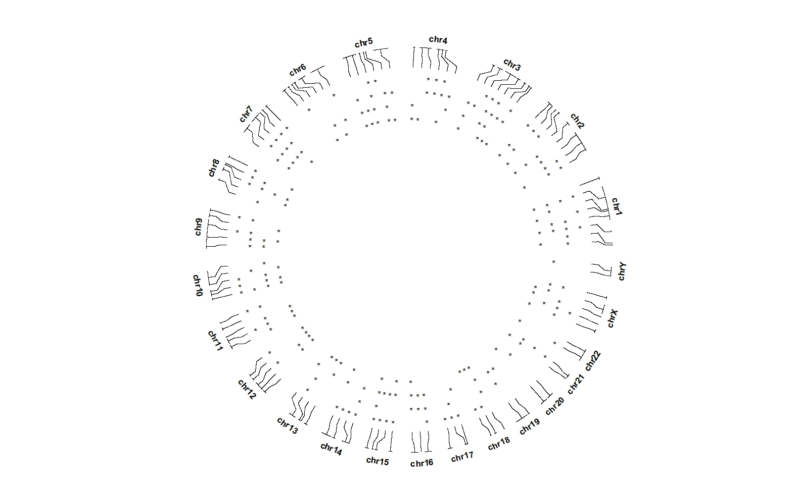
Combine with heatmap:
ggcirclize(bed_long_sig,aes(end = 360,r0 = 0.6,r1 = 0.9,
chr = chr,gstart = start,gend = end)) +
geom_trackgenomictile2(data = bed_long,
aes(x = x,y = y,fill = value),
add_link = T,chrom_data = chrom_hg19,strip.label = T) +
scale_fill_gradient2(low = "green",mid = "white",high = "red",midpoint = 0) +
geom_trackgenomictile2(aes(x = x,y = y,mark = value),
add_link = F,chrom_data = chrom_hg19,
strip.label = F,
mark.mat = T)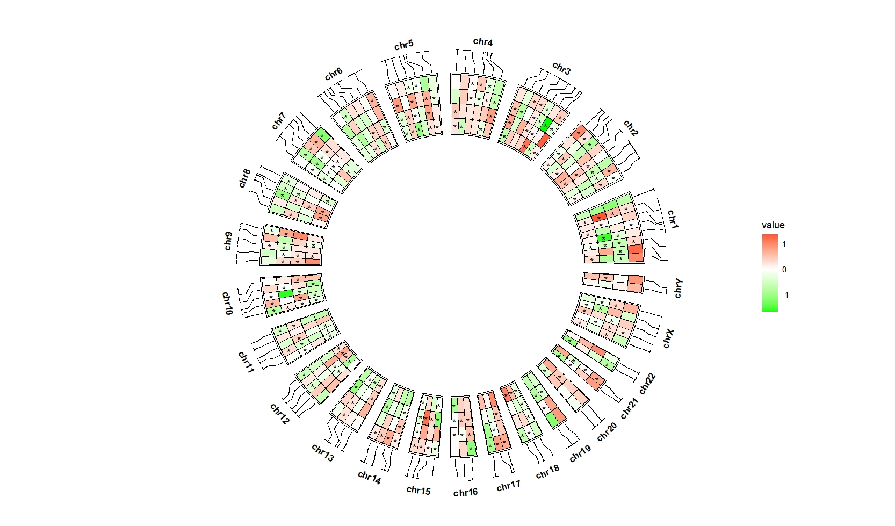